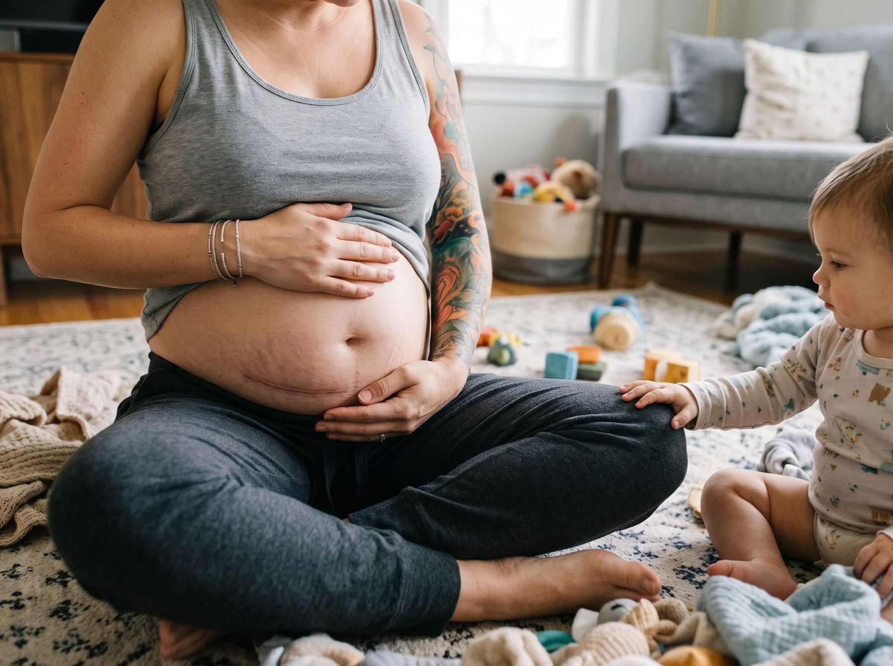

Losse behandeling
Eén afspraak
prijs volgt
duur volgt
- Kennismaken, kijken en behandelen
- Een of twee grepen voor thuis
- Eerlijk advies of terugkomen zin heeft

Je lichaam droeg een leven. Maar voelt je litteken nog steeds strak, doof of gevoelig? Dat hoeft niet zo te blijven. Wat als je weer helemaal ontspannen in je lichaam kunt leven, met cupping speciaal voor na de keizersnede?

Raak een cijfer aan
01Het trekt
Bij opstaan uit bed, bij uitrekken, bij het tillen van het autostoeltje. Alsof er vanbinnen een draad te kort is blijven zitten.
Je gaat er onbewust anders door lopen en staan. Je rug neemt het over, en die gaat op zijn beurt klagen.
02Gevoelig, of juist gevoelloos
De een verdraagt de band van haar broek niet. De ander voelt boven de lijn helemaal niets, alsof dat stuk buik van iemand anders is.
Allebei komen vaak voor, soms zelfs tegelijk: doof op de lijn, overgevoelig eromheen.
03Niemand kijkt ernaar
Bij de nacontrole wordt er even naar gekeken, en daarna nooit meer. Terwijl jij er elke ochtend mee opstaat.
Je vraagt het ook niet snel. Het voelt klein naast een gezond kind, en dus blijf je ermee rondlopen.
04Het doet pijn
Zeurend, trekkend, soms scherp. Vaak maanden later nog, en meestal op een moment dat je er niet op rekent.
Pijn die blijft hoort niet bij “het is nu eenmaal zo”. Het is een reden om ernaar te laten kijken.
05Het doet iets met je
Je kijkt er in de spiegel omheen, of je raakt het niet aan. Een litteken is ook een herinnering aan hoe het ging.
Je hoeft dat niet weg te praten. Aanraking en vertellen horen hier allebei bij het uur.
C-Section Treatments
Er is één behandeling: cupping rond je keizersnedelitteken. Geen pakketten met toeters, geen opbouw naar iets anders. Eén uur, jouw buik, mijn handen.
Een uur waarin ik met cups rond je litteken werk. Geen ronde cups die blijven staan en plekken achterlaten: ik beweeg ze en zuig licht aan, en ik vraag onderweg steeds hoe het is.
Waar het goed voor is
Hoe het gaat
Vooraf
Je schrijft me hoe lang geleden je bevalling was en wat er speelt. Ik antwoord zelf, meestal binnen twee dagen, en zeg eerlijk of ik denk dat ik je kan helpen.
Tijdens
We praten eerst. Dan kijk en voel ik voorzichtig hoe het weefsel beweegt, en vertel ik je wat ik merk. We beginnen rond het litteken, niet erop, en gaan pas dichterbij als dat prettig is.
Daarna
Je krijgt een of twee grepen die je zelf kunt doen, en je weet wat je de dagen erna kunt verwachten: meestal wat gevoeligheid, soms niets. Je mag me altijd mailen als je twijfelt.
Wie je ontvangt

Ik ben [je naam volgt], en ik werk met littekens van keizersnedes.
In de weken na een geboorte komt iedereen voor de baby. Er wordt gewogen, gemeten en gefotografeerd, en jij krijgt tussendoor de vraag of je al een beetje slaapt. Terwijl jij degene bent die net geopereerd is.
Bij Holi Her ben jij degene die op tafel ligt. Een uur lang hoeft er niets van je: niet dankbaar zijn, niet opgewekt doen, niet uitleggen waarom je huilt. Ik werk langzaam, met warme handen, en ik vertel je steeds wat ik doe.
Ik doe één ding, en ik doe alleen dat. Juist bij een keizersnedelitteken gebeurt wat zo vaak gemist wordt: het ziet er van buiten klaar uit, terwijl het vanbinnen nog aan het zoeken is.
Ervaringen
Vijf sterren, geschreven door vrouwen die het traject hebben gedaan.
Vandaag de laatste behandeling gehad bij Amber. Wat ben ik dankbaar voor dit traject! Na 3 keizersnedes was ik nieuwsgierig naar hoe een expert naar mijn litteken zou kijken. Ik had geen klachten, maar misschien wel omdat ik niet beter wist en mijn litteken accepteerde zoals het was? Na 5 behandelingen voelt mijn buik een stuk soepeler en ziet mijn litteken er heel rustig en mooi uit. Echt wel een verschil. Daarnaast waren het ook echt fijne me-time momentjes waarin ik bewust stil kon staan bij wat het litteken voor me betekent. Mijn golden scar voor 3 prachtige, gezonde kindjes. Ik voelde me al snel op mijn gemak en er was tijd en ruimte voor mijn verhaal. Nogmaals bedankt en voor alle keizersnede mama’s: gun dit jezelf.
Zeer goed en deskundig behandeld door Amber. Stelt je op je gemak, vraagt regelmatig of de behandeling niet te pijnlijk is. Nu nog 3 behandelingen te gaan maar alle vertrouwen dat mijn litteken dan goed behandeld is waarna ik geen klachten meer zal hebben/krijgen in de toekomst.
Super geholpen door Amber! Ook fijne tips om zelf te cuppen gekregen.
Deze reviews staan er woord voor woord zoals ze geschreven zijn, zonder naam. Wil je later de voornaam erbij, of je Google-reviews rechtstreeks inladen, dan kan dat.
Prijzen
Eén afspraak
prijs volgt
duur volgt
Een reeks afspraken
prijs volgt
duur volgt
Voor iemand anders
bedrag volgt
geldigheid volgt
De bedragen en het aantal afspraken vul je zelf in zodra je het weet. Zolang ze leeg zijn staat er geen prijs op de site, en dat is beter dan een getal dat je later moet aanpassen.
Praktisch
Vragen
Dat hoort niet. Je voelt een lichte trek en rek. Ik vraag onderweg steeds hoe het is, en minder is altijd goed.
Niet zoals bij de ronde cups die blijven staan. Ik beweeg de cup en zuig licht aan, dus hooguit zie je kort wat roodheid, die binnen een uur weg is.
Als je litteken nog open is, rood, warm of vocht geeft. Bij koorts of een infectie. En als je huisarts of verloskundige nog geen akkoord gaf. Twijfel je, mail me dan eerst.
Dat verschilt per vrouw. Veel vrouwen merken na de eerste keer al iets, en daarna is een korte reeks gebruikelijk. We kijken steeds samen of het nog zin heeft; ik stuur je nooit terug voor afspraken die je niet nodig hebt.
Dan zeg je af. Met een baby weet je niet hoe een dag loopt. Laat het weten wanneer je het weet, dan plannen we opnieuw.
Meestal zes tot acht weken erna, zodra het litteken helemaal dicht is en je huisarts of verloskundige akkoord is. Eerder praten mag altijd.
Nee. Littekens van drie jaar geleden, of tien, reageren nog steeds, en ouder weefsel verandert vaak sneller dan vrouwen verwachten.
Dat hoor ik bijna elke week. We beginnen met een handdoek, of met mijn handen naast de lijn. Kijken hoeft niet, en je mag op elk moment stoppen zonder uitleg.
Neem de baby mee. Bij bijna elke eerste afspraak is er een. Voeden, troosten, verder gaan; het uur hoeft niet netjes te verlopen.
Over vergoeding: het antwoord volgt. Vraag het me, dan zoek ik het voor je na.
Zeer, moe, met de baby, drie jaar te laat. De deur is dezelfde.